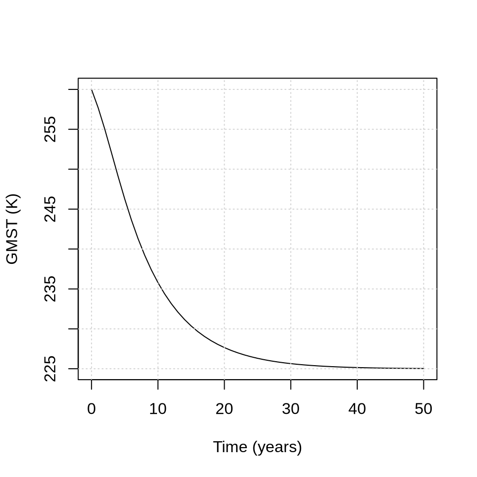
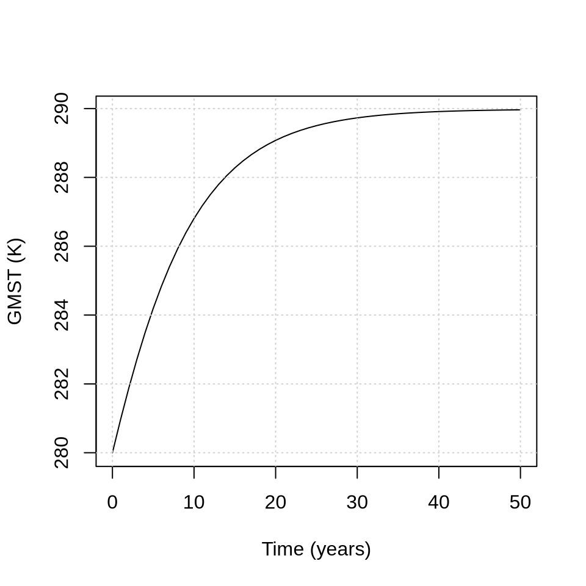
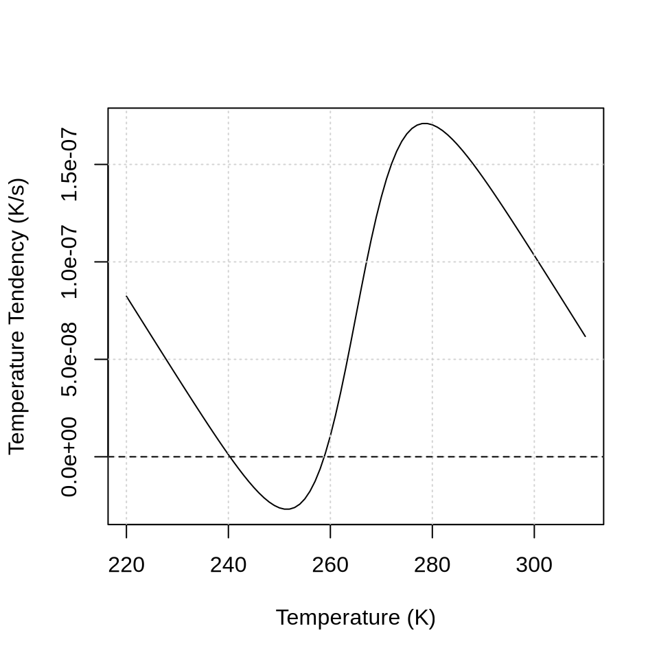

2 Week 2: Atmospheric Energy Balance
2.1 Budyko Energy Balance Model
The Budyko Energy Balance Model can be expressed as:
\[ \frac{dT}{dt} = \left( (1 - \alpha(T))Q - (A + BT) \right) / H \]
- \(Q\) is the mean incoming solar radiation: \(Q = \frac{1}{4} S_0\), where \(S_0\) = 1368 W m\(^{-2}\) is the solar constant, such that \(Q\) = 342 W m\(^{-2}\)
- \(H\) = planetary heat capacity (\(H\) = 5 \(\times\) 10\(^8\) J m\(^{-2}\) K\(^{-1}\)) Schwartz (2007)
- A = 203.3 W m-2
- B = 2.09 W m-2 Celsius-1
The albedo \(\alpha\) is a function of temperature \(T\) \[ \alpha(T) = 0.5 - 0.2 \tanh \left( \frac{T-265}{10} \right) \]
Plot this function in R for a temperature range of 220 K to 310 K. Your result should look like this

Quiz Question 1: What is the albedo at 260K?
Using the terms in the Budyko energy balance model, let us plot the incoming and outgoing radiation for different global mean surface temperatures:
T <- seq(220, 310, 1)
# Outgoing radiation
A <- 203.3 # W m-2
B <- 2.09 # W m-2 C-1
E_out <- A + B * (T - 273.15)
# Incoming radiation
Q <- 1368 / 4 # mean incoming solar radiation in W m-2
albedo <- 0.5 - 0.2 * tanh((T - 265) / 10)
E_in <- (1 - albedo) * Q
plot(T, E_out,
type = "l", col = "red",
xlab = "Temperature (K)",
ylab = "Radiative Flux (W/m2)"
)
lines(T, E_in, col = "blue")
grid()
legend("topleft", c("Incoming radiation", "Outgoing radiation"), pch = 16, col = c("blue", "red"), bty = "n")
Quiz Question 2: How many equilibria do you see?
Let us now plot the temperature tendency against temperature:
T <- seq(220, 310, 1)
# Specific heat capacity
H <- 5 * 10^8 # J m-2 K-1
# Outgoing radiation
A <- 203.3 # W m-2
B <- 2.09 # W m-2 C-1
E_out <- A + B * (T - 273.15)
# Incoming radiation
Q <- 1368 / 4 # mean incoming solar radiation in W m-2
albedo <- 0.5 - 0.2 * tanh((T - 265) / 10)
E_in <- (1 - albedo) * Q
# Temperature tendency
dT <- (E_in - E_out) / H
plot(x = T, y = dT,
type = "l",
xlab = "Temperature (K)",
ylab = "Temperature Tendency (K/s)"
)
grid()
abline(h=0, lty = 2)
Quiz Question 3: Which of the equilibria are stable (from left to right)?
Quiz Question 4: Which of the equilibria are unstable (from left to right)?
Let’s integrate our tendency equation forward in time using an initial temperature of 260 K and plot how global mean surface temperature (GMST) changes with time:
# Parameter
A <- 203.3 # W m-2 (Budyko model coefficient)
B <- 2.09 # W m-2 C-1 (Budyko model coefficient)
H <- 5 * 10^8 # J m-2 K-1 # Specific heat capacity
Q <- 1368 / 4 # mean incoming solar radiation in W m-2
# Initial values
T <- 260
# Integration settings
dt <- 1
t_end <- 50
times <- seq(0, t_end, by = dt)
# Store results
T_out <- numeric(length(times))
# Store initial values
T_out[1] <- T
# Euler integration
for (i in 2:length(times)) {
# Calculate tendencies
# Outgoing radiation
E_out <- A + B * (T - 273.15)
# Incoming radiation
albedo <- 0.5 - 0.2 * tanh((T - 265) / 10)
E_in <- (1 - albedo) * Q
# Temperature tendency (K/year)
# We need to convert the tendency equation from K/s to K/year
# We do this by multiplying the rate with seconds per year
dT <- (E_in - E_out) / H * (86400 * 365.25)
# Update the state variable
T <- T + dT * dt
# Store results
T_out[i] <- T
}
output <- data.frame(
time = times,
T = T_out
)
plot(
output$time,
output$T,
type = "l",
xlab = "Time (years)",
ylab = "GMST (K)",
ylim = range(output$T)
)
grid()
Quiz Question 5: How does this new figure relate to the previous figure?
Quiz Question 6: At what initial value would we end up at the warm stable equilibrium?
Verify your answer by running the same code above but using a different initial condition.
# Parameter
A <- 203.3 # W m-2 (Budyko model coefficient)
B <- 2.09 # W m-2 C-1 (Budyko model coefficient)
H <- 5 * 10^8 # J m-2 K-1 # Specific heat capacity
Q <- 1368 / 4 # mean incoming solar radiation in W m-2
# Initial values
T <- 280
# Integration settings
dt <- 1
t_end <- 50
times <- seq(0, t_end, by = dt)
# Store results
T_out <- numeric(length(times))
# Store initial values
T_out[1] <- T
# Euler integration
for (i in 2:length(times)) {
# Calculate tendencies
# Outgoing radiation
E_out <- A + B * (T - 273.15)
# Incoming radiation
albedo <- 0.5 - 0.2 * tanh((T - 265) / 10)
E_in <- (1 - albedo) * Q
# Temperature tendency (K/year)
# We need to convert the tendency equation from K/s to K/year
# We do this by multiplying the rate with seconds per year
dT <- (E_in - E_out) / H * (86400 * 365.25)
# Update the state variable
T <- T + dT * dt
# Store results
T_out[i] <- T
}
output <- data.frame(
time = times,
T = T_out
)
plot(
output$time,
output$T,
type = "l",
xlab = "Time (years)",
ylab = "GMST (K)",
ylim = range(output$T)
)
grid()
Now, the location of the equilibria could change if we change some of the parameter values. Plot temperature versus temperature tendency but increase the incoming solar radiation by 30%
T <- seq(220, 310, 1)
# Specific heat capacity
H <- 5 * 10^8 # J m-2 K-1
# Outgoing radiation
A <- 203.3 # W m-2
B <- 2.09 # W m-2 C-1
E_out <- A + B * (T - 273.15)
# Incoming radiation
Q <- 1368 / 4 * 1.3 # mean incoming solar radiation in W m-2
albedo <- 0.5 - 0.2 * tanh((T - 265) / 10)
E_in <- (1 - albedo) * Q
# Temperature tendency
dT <- (E_in - E_out) / H
plot(x = T, y = dT,
type = "l",
xlab = "Temperature (K)",
ylab = "Temperature Tendency (K/s)"
)
grid()
abline(h=0, lty = 2)
Quiz Question 7: How does the location of the unstable equilibrium change if we increase the incoming solar radiation by 30%?
We can conclude that the position of the equilibria can change as we change model parameters. We can therefore plot the equilibrium temperatures for different values of incoming solar radiation. Run the code below to do this. The code is a little complicated and you are not expected to understand this code in detail.
# Parameter
A <- 203.3 # W m-2 (Budyko model coefficient)
B <- 2.09 # W m-2 C-1 (Budyko model coefficient)
H <- 5 * 10^8 # J m-2 K-1 # Specific heat capacity
Q0 <- 1368 / 4 # mean incoming solar radiation in W m-2
# ----------------------------
# Equilibrium function
# ----------------------------
Ffun <- function(T, mu) {
Q <- mu * Q0
albedo <- 0.5 - 0.2 * tanh((T - 265) / 10)
E_in <- (1 - albedo) * Q
E_out <- A + B * (T - 273.15)
dT <- (E_in - E_out) / H
return(dT)
}
# ----------------------------
# Parameter sweep
# ----------------------------
mu_vals <- seq(0.7, 1.4, length.out = 300)
T_all <- c()
mu_all <- c()
T_grid <- seq(200, 330, by = 0.5)
for (mu in mu_vals) {
Fvals <- Ffun(T_grid, mu)
sign_change <- which(diff(sign(Fvals)) != 0)
if (length(sign_change) > 0) {
for (idx in sign_change) {
root <- uniroot(Ffun,
interval = c(T_grid[idx], T_grid[idx + 1]),
mu = mu
)$root
T_all <- c(T_all, root)
mu_all <- c(mu_all, mu)
}
}
}
# ----------------------------
# Plot bifurcation diagram
# ----------------------------
plot(mu_all, T_all,
pch = 16,
cex = 0.6,
xlab = expression(Q / Q[0]),
ylab = "Equilibrium Temperature (K)"
)
abline(h = 250, lty = 2, col ="orange")
abline(h = 277, lty = 2, col ="orange")
grid()
This is a bifurcation diagram where each dot on the line gives the equilibrium temperature at a given parameter value. If the incoming solar radiation is only 70% of the original value, we only get one equilibrium. At 95% we start having three equilibria. A bifurcation branch can have stable and unstable branches. I have marked the different branches with the orange stippled lines.
Quiz Question 8: Which of the three branches are stable, and which are unstable?
2.2 QUEST simulations
In the exercises above we were able to show that the Budyko energy balance model can have multiple stable and unstable equilibria. Now we want to find out if this also applies in the case of a more complex model like QUEST. Open run_quest/config/config_flags.R. Depending on how you edited this file in the past, it may look like this:
flags <- list(
# modules
run_AirSeaCarbon = TRUE,
run_atmosphere = TRUE,
run_ocean = TRUE,
run_npzd = TRUE,
run_land = TRUE,
run_sic = TRUE,
run_icesheets = TRUE,
# settings
anthropogenic_emissions = TRUE,
prescribed_CO2 = FALSE,
prescribed_seaice = FALSE,
diagnose_carbonates = TRUE
)For today’s tutorial, we want to turn on only the atmosphere, ocean, and sea ice modules, so that:
flags <- list(
# modules
run_AirSeaCarbon = FALSE,
run_atmosphere = TRUE,
run_ocean = TRUE,
run_npzd = FALSE,
run_land = FALSE,
run_sic = TRUE,
run_icesheets = FALSE,
# settings
anthropogenic_emissions = FALSE,
prescribed_CO2 = FALSE,
prescribed_seaice = FALSE,
diagnose_carbonates = FALSE
)You could achieve this by editing the file and saving it. However, it quickly becomes cumbersome changing settings by hand. Instead, we are going to overwrite the settings like this:
rm(list = ls())
# Load the QUEST package:
library(quest)
# Set the path to the configuration files:
config.path <- file.path(getwd(), "run_quest/config")
# Load the configuration files:
config <- config_load(path = config.path)
# Set the flags to what we want
config$flags$run_AirSeaCarbon <- FALSE
config$flags$run_atmosphere <- TRUE
config$flags$run_ocean <- TRUE
config$flags$run_npzd <- FALSE
config$flags$run_land <- FALSE
config$flags$run_sic <- TRUE
config$flags$run_icesheets <- FALSE
config$flags$anthropogenic_emissions <- FALSE
config$flags$prescribed_CO2 <- FALSE
config$flags$prescribed_seaice <- FALSE
config$flags$diagnose_carbonates <- FALSESpinup the model for this configuration, To avoid long messages add this into your curly brackets: r, message = FALSE, warnings = FALSE, results = FALSE
times <- seq(-10000, 0, by = 1)
output <- core_run_esm(config = config, times = times)## Warning in mean.default(out$N_total): argument is not numeric or logical: returning NA
saveRDS(output, "output.rds")Let’s have a look at some of the variables to see whether the model is spun up
par(mfrow = c(2, 3), mar = c(3, 5, 2, 1))
utils_plot(config, output, variables = c("T_atm_global", "T_atm_L", "T_atm_H", "alpha_H", "A_sic", "R_net_TOA"), my.xlim = c(-10000, 0), PNGfile = FALSE)
Let us now assess whether there are multiple equilibria. As a first step we need to generate a new initialization file. This initialization file contains the values of all state variables as they were computed during the last time step of the spinup that you completed above. The code below will produce a new file called config_init.R:
# Create initialization file from final spin-up state
utils_write_new_init(
input_file = "output.rds",
output_file = "config_init.R",
final_year = TRUE
)## Initialization file written to: config_init.RQuiz Question 9: Open config_init.R. What is the value of the surface air temperature in the lower latitude box (T_atm_L)?
Running config_init.R creates a vector containing the initial values of all state variables in their spun-up state for the current model configuration. We will use this spun-up state as the starting point for identifying the model’s equilibria by perturbing the state variables and examining how the system responds. Before doing so, however, we need to decide which state variables can meaningfully be perturbed. We should exclude variables that are inactive because their corresponding module is switched off (e.g., marine biota). We should also exclude variables whose total quantity must be conserved when applying a perturbation (e.g., carbon pools). The variables that we will perturb are atmosphere and ocean temperature, as well as fractional sea ice area.
# Get the spun up state variables
state_eq <- source("config_init.R")$value
# Select state variables that will be perturbed
select_variables <- c("T_atm_L", "T_atm_H", "T_ocn_SL", "T_ocn_SH", "T_ocn_DL", "T_ocn_DH", "A_sic")
# Find the equilibria
equilibria <- eval_equilibria(config, state_eq, select_variables = select_variables, n_starts = 100)
print(equilibria$physical)The values that you see are the equilibrium values of the state variables. There is only one equilibrium.
Quiz Question 10: What is the equilibrium value of the fractional area of sea ice in the high-latitude ocean (A_sic)?
Let us now find out whether this equilibrium is stable or unstable
stability_results <- eval_eigenvalues(config,
equilibria_dimensionless = equilibria$dimensionless,
state_eq = state_eq,
state_min_active = equilibria$state_min_active,
state_max_active = equilibria$state_max_active
)
print(stability_results)Quiz Question 11: Is this equilibrium stable or unstable?
So, we conclude that there is only one equilibrium solution for this model configuration.
Now, let us explore what happens when we change one of the sea ice parameter values.
Open run_quest/config/config_para.R ans search for the parameters \(\beta_{ocn,atm}\) and \(\beta_{ocn,sic}\):
beta_atm_sic = list(value = 0.0105512, min = 0e+00, max = 2e-01, domain = "sic"),
beta_ocn_sic = list(value = 0.057591, min = 0e+00, max = 2e-01, domain = "sic"), We want to change those values to:
beta_atm_sic = list(value = 0.0105512 * 1.5, min = 0e+00, max = 2e-01, domain = "sic"),
beta_ocn_sic = list(value = 0.057591 * 1.5, min = 0e+00, max = 2e-01, domain = "sic"), But instead of doing this by hand, we will overwrite those values:
config$params$beta_atm_sic <- 0.0105512 * 1.5
config$params$beta_ocn_sic <- 0.057591 * 1.5Now you need to do the following steps:
Re-run the spinup so that the simulation adjusts to this new parameter value
Create initialization file from final spin-up state
Find the equilibria
Assess whether the equilibria are stable or unstable
times <- seq(-10000, 0, by = 1)
output <- core_run_esm(config = config, times = times)
# Create initialization file from final spin-up state
utils_write_new_init(
input_file = "output.rds",
output_file = "config_init.R",
final_year = TRUE
)
# Get the spun up state variables
state_eq <- source("config_init.R")$value
# Select state variables that will be perturbed
select_variables <- c("T_atm_L", "T_atm_H", "T_ocn_SL", "T_ocn_SH", "T_ocn_DL", "T_ocn_DH", "A_sic")
# Find the equilibria
equilibria <- eval_equilibria(config, state_eq, select_variables = select_variables, n_starts = 100)
stability_results <- eval_eigenvalues(config,
equilibria_dimensionless = equilibria$dimensionless,
state_eq = state_eq,
state_min_active = equilibria$state_min_active,
state_max_active = equilibria$state_max_active
)
print(stability_results)Quiz Question 12: How many equilibria do you find now?
The number of equilibria can change as parameter values change. Thus, the system’s internal dynamics depend on the particular combination of parameter values. Exploring this vast range of possible dynamics is challenging for a model with 60 tunable parameters.